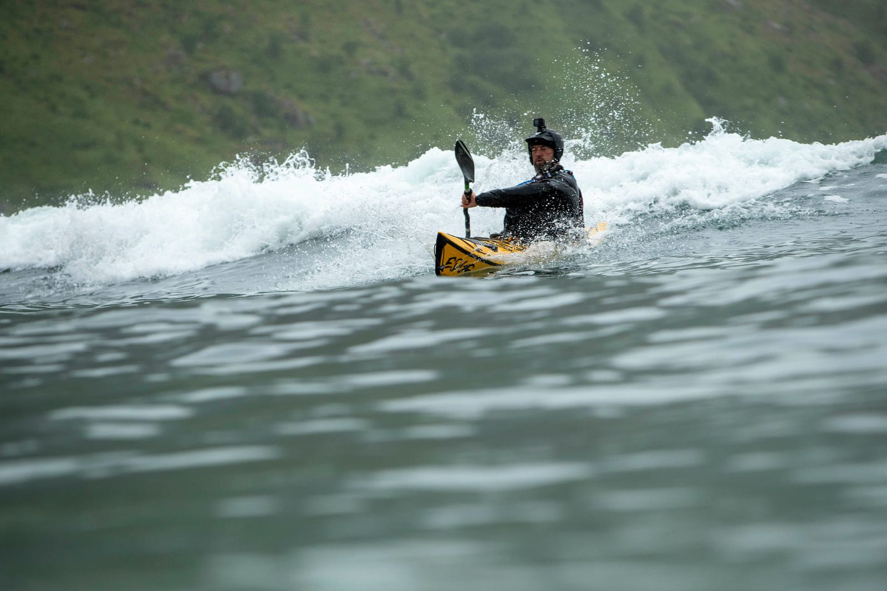
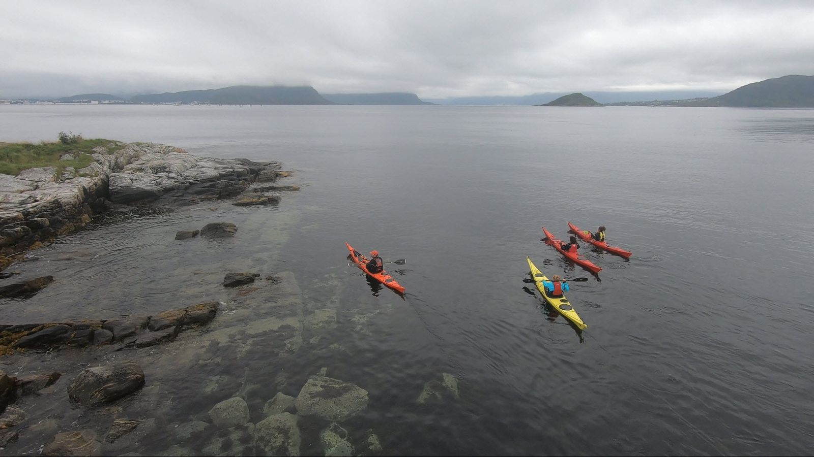

Kursene
Kajakkurs for alle nivåer — fra ditt første møte med kajakken til avansert kystpadling. Alle kurs følger Norges Padleforbunds kursprogram og holdes i smågrupper for best mulig oppfølging.

Finn kurset som passer deg
Fra introkurs for nysgjerrige til spesialkurs for erfarne padlere. Velg kurset som passer ditt nivå og dine ambisjoner.

Introkurs Kajakk
Din første padleopplevelse
Les mer
Grunnkurs Havkajakk
NPF Våttkort — din padlelisens
Les mer
Teknikkurs Havkajakk
Løft padlingen til neste nivå
Les mer
Rullekurs
Mestre eskimorullingen
Les mer
Brottpadlekurs
Surfing i brottsjø
Les mer
Mørkepadling
Padling etter mørkets frembrudd
Les mer
Mørkenavigering
Avansert navigering i mørket
Les mer
Aktivitetslederkurs Hav
Bli aktivitetsleder i havkajakk
Les merDin vei fra nybegynner til ekspert
Kursene følger Norges Padleforbunds offisielle kursprogram. Hvert trinn bygger videre på det forrige og gir deg stadig nye ferdigheter og muligheter.
- Introkurs
Prøv kajakk for første gang. 3 timer med grunnleggende padleteknikk og sikkerhet.
- Grunnkurs
NPF Våttkort. 2 dager med grundig opplæring i havkajakk, sjøvett og redning.
- Teknikkurs
Avansert teknikk, redning, tauing og introduksjon til rulling.
- Spesialkurs
Rullekurs, brottpadling, mørkepadling og navigering — velg din retning.
Etter grunnkurset kan du leie kajakk hos Kajakkguiden, delta på fellesturer, og velge spesialisering innen rulling, brottpadling eller navigering.
Ikke sikker på hvilket kurs?
Ta kontakt, så hjelper jeg deg med å finne kurset som passer ditt nivå og dine ambisjoner. Jeg skreddersyr gjerne opplegg for grupper og bedrifter.